maquina-parada.webp (16:9)
maquina-parada.webp (16:9)Tirar a máquina do canto e saber o que ela resolve
Entender o que a sua máquina de casa dá conta sozinha e qual o atalho quando ela não alcança, antes de pensar em comprar outra.
Barra, cós, lateral e zíper explicados pela Sequência M.A.C.: medir, alfinetar e só então costurar. É o jeito de acertar a peça antes do primeiro ponto.
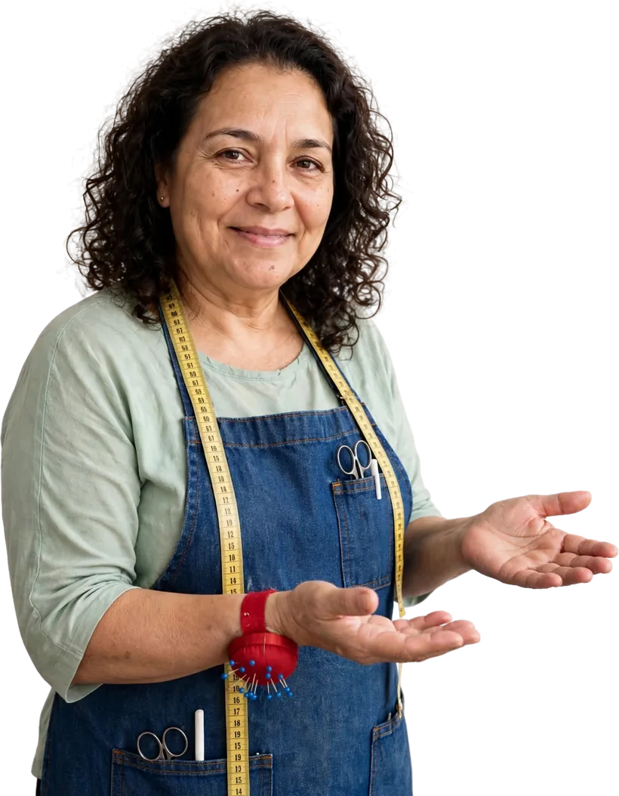

Guia ilustrado de consertos em roupa pronta, para máquina doméstica
1máquina doméstica já basta
4guias em PDF
7dias de garantia incondicional
18consertos passo a passo
Nada de teoria de moda nem molde do zero. Só o que resolve a peça que está na sua mão.
maquina-parada.webp (16:9)Entender o que a sua máquina de casa dá conta sozinha e qual o atalho quando ela não alcança, antes de pensar em comprar outra.
Em calça social, jeans ou saia, com o acabamento que cada tecido pede.
Os dois consertos que mais assustam no começo, em etapas curtas.
Marcar e provar antes de costurar, para a peça sair certa na primeira vez.
Olhar a peça e saber se o conserto compensa ou se é melhor nem começar.
 pilha-de-roupas.webp (16:9)
pilha-de-roupas.webp (16:9)Aquelas roupas boas que estão paradas por causa de uma barra, de um botão ou de uma lateral voltam para o cabide, prontas para usar.
Quase todo conserto que dá errado já estava errado antes da agulha descer. Por isso cada um dos 18 consertos do guia segue a mesma ordem, a Sequência M.A.C.
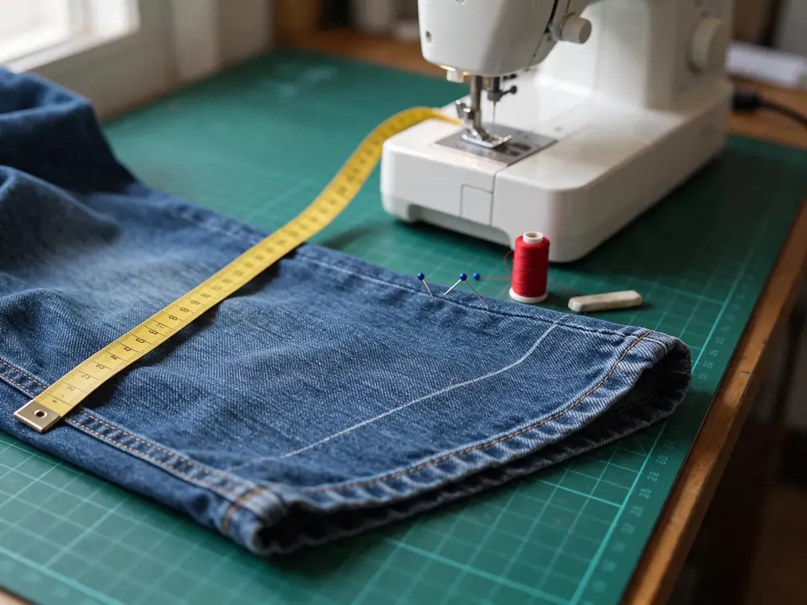
passo-medir.webp (4:3)Com a peça vestida em quem vai usar, você confere o ponto do ajuste e anota na ficha de medidas do guia. Nada de “mais ou menos”.
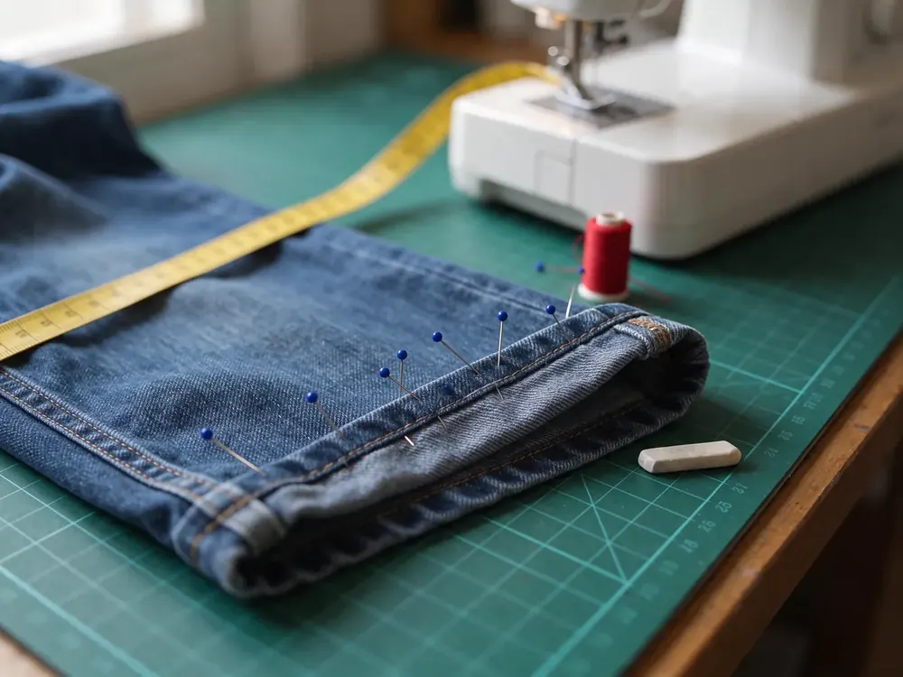
passo-alfinetar.webp (4:3)Você prende e marca o ajuste com alfinete e giz e prova de novo. Se precisar corrigir, é aqui, sem nenhuma linha para desmanchar.
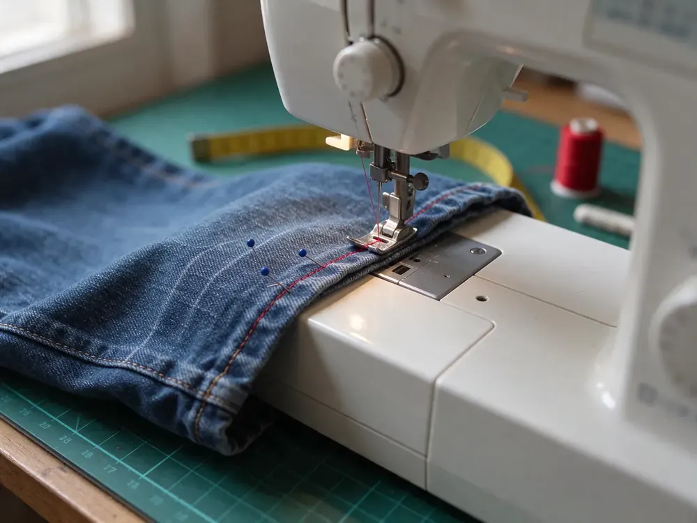
passo-costurar.webp (4:3)Só agora a peça vai para a máquina, com o passo a passo ilustrado aberto ao lado e cada etapa desenhada para você comparar.
No meio do conserto as suas mãos estão ocupadas com tecido e alfinete. O guia fica parado na página certa, no celular, no tablet ou impresso, enquanto você trabalha.
Quatro guias que se completam e um bônus que chega depois, quando você já tiver feito os primeiros consertos.
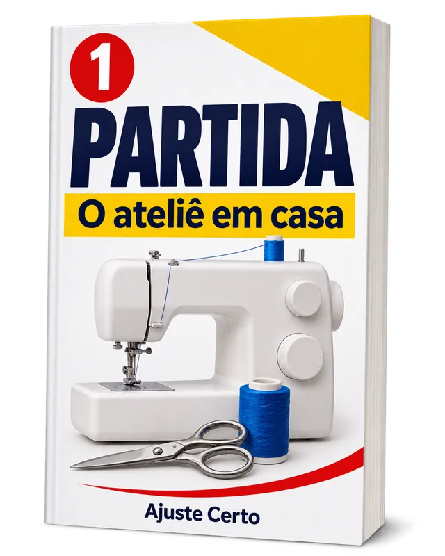
As ferramentas que fazem diferença e as que podem esperar. O que cada ponto e cada pé da máquina doméstica faz, e quando a costura à mão resolve melhor.
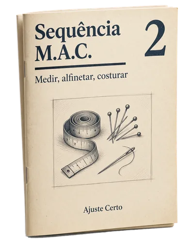
O método completo para medir, alfinetar e marcar qualquer ajuste, com fichas de medida prontas para imprimir e usar de novo a cada peça.
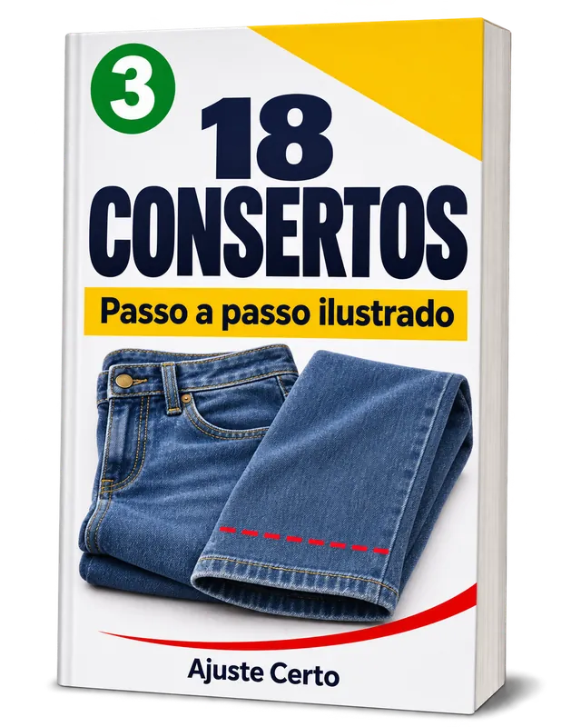
Os ajustes mais pedidos em jeans, malha e tecido plano: barras, laterais, cós, zíper, mangas e alças. Cada etapa desenhada, com nível de dificuldade indicado.
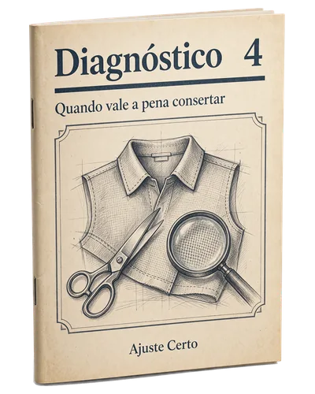
Quando o conserto compensa e quando não compensa. Os erros mais comuns de quem está começando e como desfazer uma costura sem marcar o tecido.
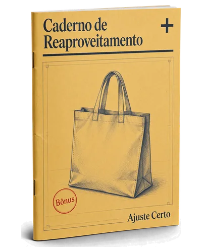
Ideias para transformar peças paradas em peças novas. Ele chega no seu e-mail uma semana depois da compra, quando os primeiros consertos já estiverem feitos.
Cada um explicado etapa por etapa, com desenho de cada passo.
 conserto-barra-jeans.webp (1:1)
conserto-barra-jeans.webp (1:1)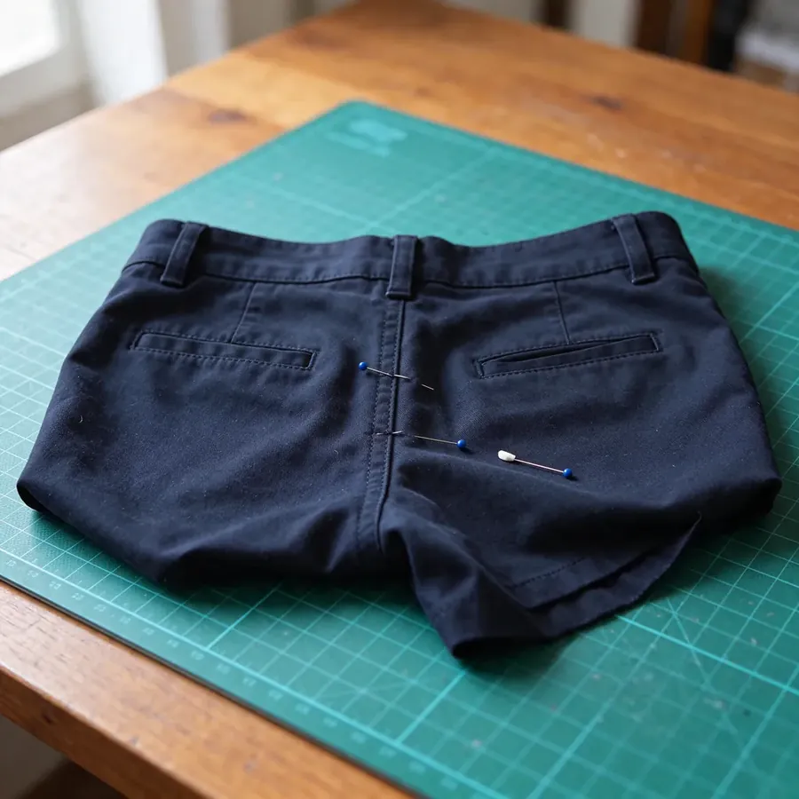
conserto-cos.webp (1:1) conserto-ziper.webp (1:1)
conserto-ziper.webp (1:1)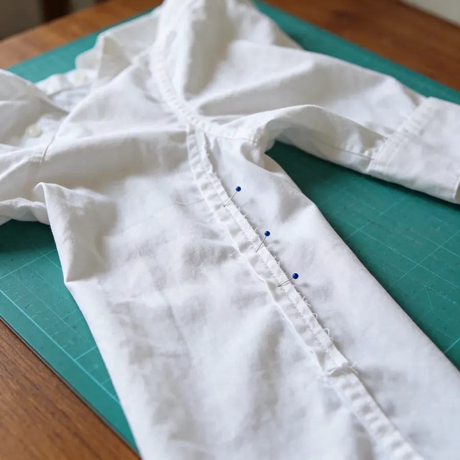
conserto-lateral.webp (1:1) conserto-manga.webp (1:1)
conserto-manga.webp (1:1)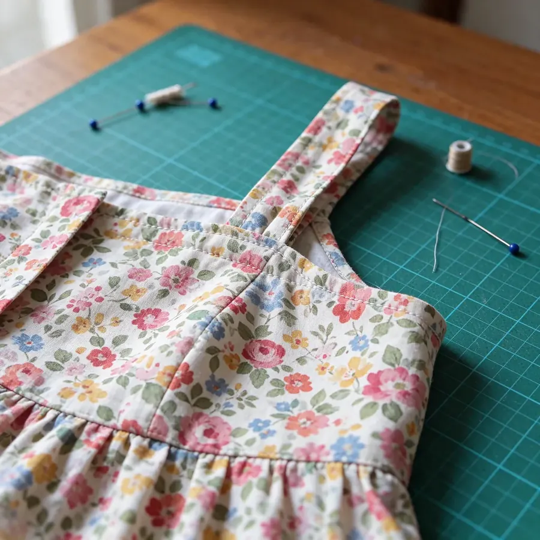
conserto-alca.webp (1:1)+ 12 consertos de barra, lateral, cós, zíper, manga e alça no mesmo guia.

[Nome da expert]
costureira há [X] anos
[Nome]Um preço só, sem mensalidade e sem plano para escolher.
Ajuste Certo
Referência de mercado para materiais do tema: R$ 47,00
R$19,90
à vista, pagamento único
Mais de 80 consertos, cada um com tempo médio e nível de dificuldade, para saber quanto cada ajuste costuma custar. Se quiser, é só marcar a caixinha no checkout.
É assim que cada conserto aparece no Guia 3: etapa por etapa, com desenho e uma dica no final.
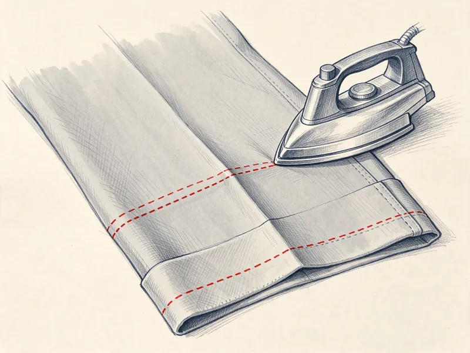
pagina-passo-1.webp (4:3)Confira a marcação feita na etapa do alfinete e passe o vinco a ferro.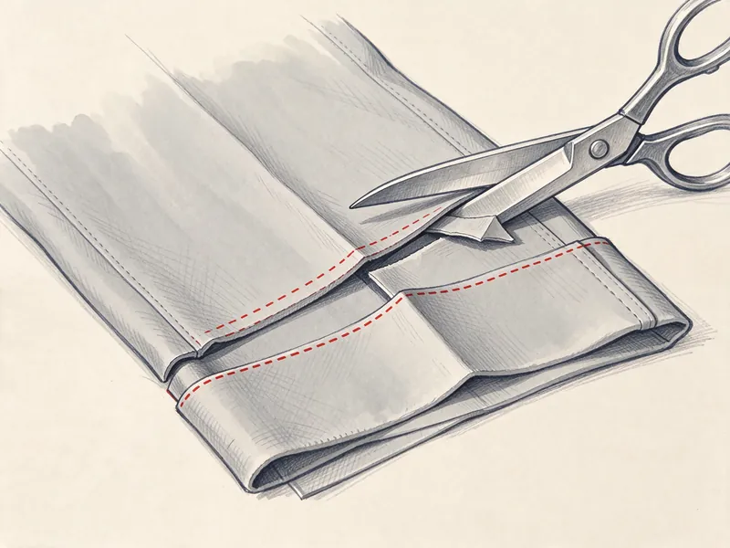
pagina-passo-2.webp (4:3)Corte o excesso deixando a margem indicada na ficha e faça a primeira dobra.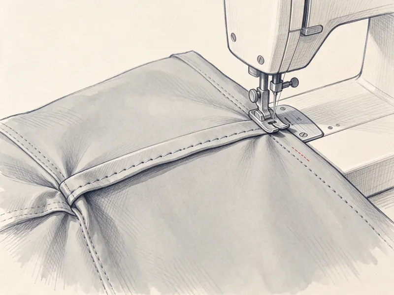
pagina-passo-3.webp (4:3)Costure rente à dobra, começando pela costura interna da perna.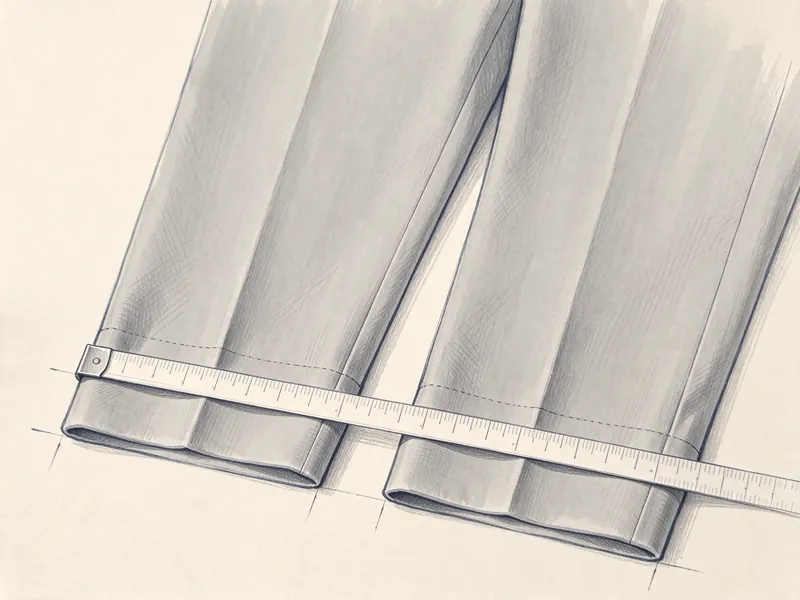
pagina-passo-4.webp (4:3)Prove de novo e compare as duas pernas lado a lado antes do acabamento.Dica: comece sempre pela perna menos à vista. Se precisar refazer, o erro fica onde ninguém repara.
Página de demonstração. O guia completo traz 18 consertos neste formato.
Baixe os guias, leia, teste na sua máquina. Se por qualquer motivo achar que não é para você, peça o reembolso em até 7 dias e o valor volta inteiro.
Você não precisa explicar o motivo. O risco fica todo do nosso lado.
[Nome]autora do Ajuste Certo
Consegue. O Guia 1 parte do básico, como passar a linha e regular o ponto, e cada conserto do Guia 3 tem o nível indicado. A sugestão é começar pelos marcados como iniciante e avançar no seu ritmo.
Uma máquina doméstica com ponto reto e zigue-zague dá conta da maior parte dos consertos. O Guia 1 mostra o que dá para fazer com ela e o jeito de resolver à mão quando ela não alcança. Overlock e galoneira são opcionais, e o guia avisa quando um conserto fica melhor com elas.
Serve. Se ela faz ponto reto, já resolve barras, laterais e cós. O Guia 1 ensina a conferir a agulha, a tensão da linha e o comprimento do ponto, que são os ajustes que mais fazem diferença numa máquina parada há tempo.
É justamente para isso que existe a Sequência M.A.C.: você mede, alfineta e prova antes de dar o primeiro ponto, então dá para corrigir sem desmanchar nada. O Guia 4 ensina a desfazer uma costura sem marcar o tecido. E a dica é treinar primeiro numa peça que você não usa mais.
São 18 consertos em jeans, malha e tecido plano: barras (de calça, saia e jeans), laterais, cós, troca de zíper, mangas e alças. Cada um tem o passo a passo desenhado e o nível de dificuldade indicado.
Funciona. O Guia 3 separa os consertos por tipo de tecido e indica a agulha e o ponto certos para cada um, incluindo como costurar jeans grosso sem quebrar agulha e malha sem deixar a costura ondulada.
Não é vídeo. São quatro guias em PDF, feitos para consultar durante o conserto. Não existe cronograma: você abre o conserto que precisa, segue as etapas e pronto. Dá para ler tudo em um fim de semana ou usar só quando aparecer uma peça.
Não precisa imprimir: os guias abrem no celular, no tablet ou no computador. Se preferir no papel, é só imprimir em casa as páginas que quiser. Não há envio pelo correio, o material é todo digital.
Assim que o pagamento é confirmado, o link de download chega no e-mail que você cadastrou. Com cartão e Pix, a confirmação costuma ser imediata. O bônus chega no mesmo e-mail no 7º dia após a compra.
Confira as pastas de spam e de promoções, e se o e-mail cadastrado no pagamento está certo. Se mesmo assim não encontrar, escreva para o e-mail de suporte que aparece no rodapé desta página e reenviamos o acesso.
É pagamento único de R$ 19,90, sem mensalidade e sem renovação. No checkout aparece a Tabela de Referência de Preços por mais R$ 7,90; ela é opcional e só entra se você marcar a caixinha.
Sim. O pagamento é feito no checkout da plataforma de pagamento, em ambiente seguro, e os dados do seu cartão não passam por esta página. A empresa responsável, com CNPJ, está identificada no rodapé.
É só escrever para o e-mail de suporte que aparece no rodapé desta página, tanto para dúvidas de acesso quanto sobre o conteúdo dos guias.
Você tem 7 dias de garantia incondicional. É só pedir o reembolso pelo e-mail de suporte que aparece no rodapé desta página, sem justificativa, e o valor é devolvido integralmente.
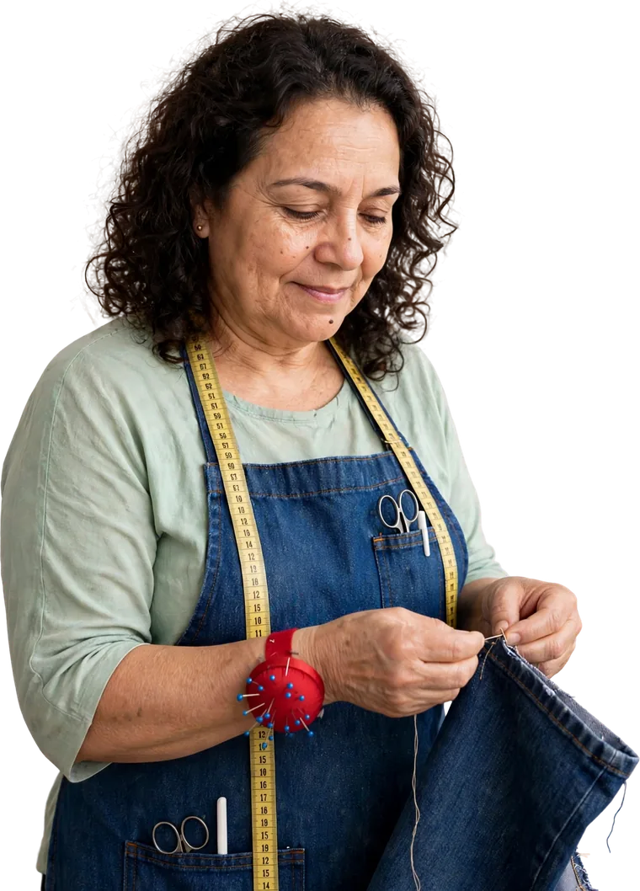
Quatro guias, um método de três passos e a máquina que você já tem. O resto é linha e alfinete.
Quero o Ajuste Certo